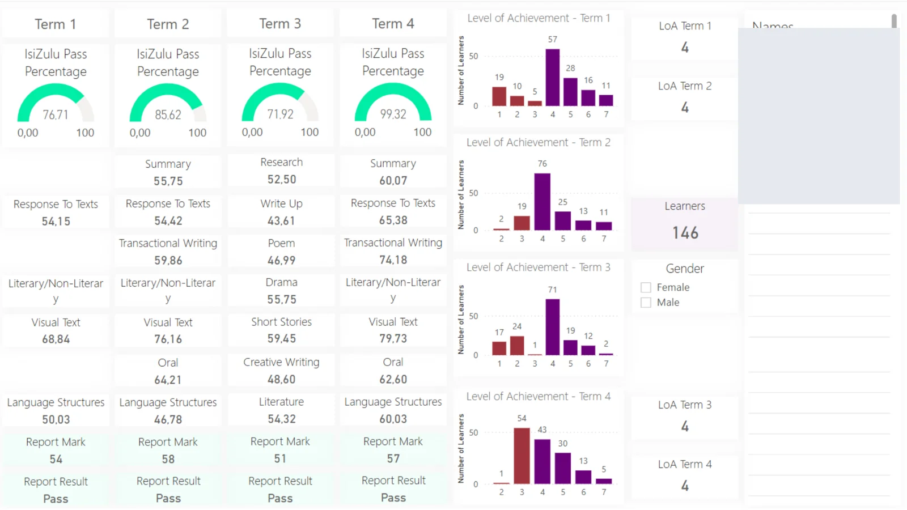

Analytics
Digistats – Analysis of Results
School records and SA-SAMS data power interactive performance dashboards and individual term reports for educators and parents.

Context
I realised that schools needed a way to analyse performance data effectively to drive evidence-based decisions, engage both educators and parents, and provide customizable insights tailored to each learner.
Objective
I tasked myself with designing and building an analysis-of-results tool that could visualise school performance, allow stakeholder interaction, and generate actionable reports for learners and educators.
My contribution
I developed Digistats AoR, a comprehensive tool featuring a Power BI dashboard, written reports, and an interactive portal for educators and parents, with functionality for schools to customise views and export term reports linked to individual learner performance; the tool integrated data from SA-SAMS with the school’s in-house data to deliver a fresh new approach to learner analytics.
Outcome
The tool was successfully deployed at Khayelihle Primary School in Vosloorus in 2021 as the first adopter, enabling data-driven decision-making, stakeholder engagement, and scalable customization for future schools.